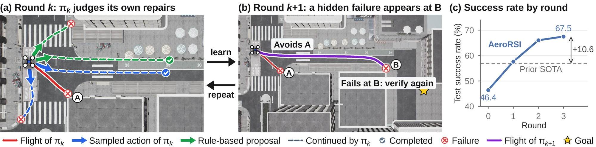
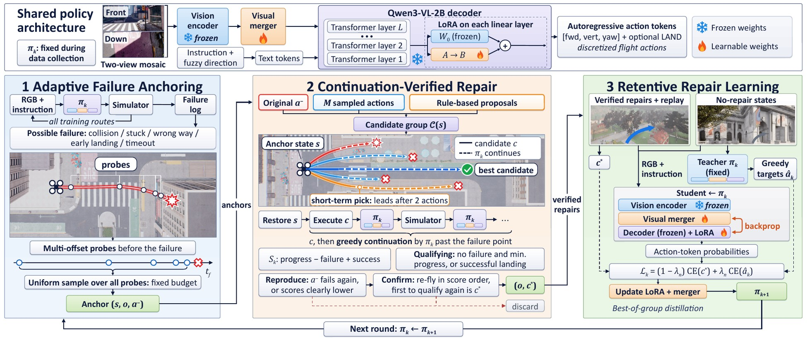
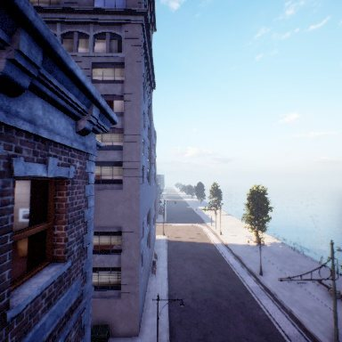
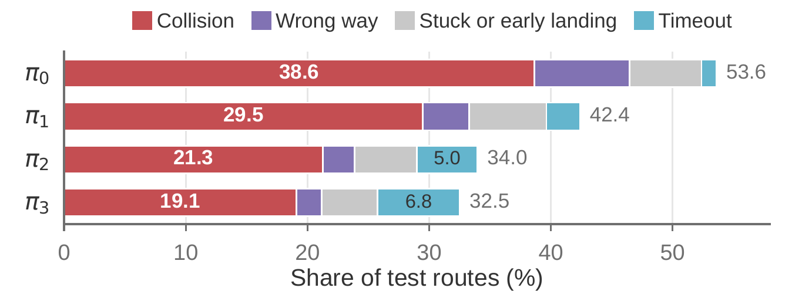

One round of repair at one failure, three generations of the policy on one test route, and the whole test set. Translucent drones are separate recorded flights composited along one camera path. Music: “The Spectre” by Alan Walker (instrumental).
A drone navigation policy repairs its own failures: before each failure, it flies on from every candidate action, keeps the actions it can complete, learns them, and repeats on the failures that remain.
Vision-language-action drone policies still fail often in closed-loop flight, and the repairs they need are beyond what human pilots can label or rule-based planners can reliably supply. AeroRSI lets the policy judge its own repairs by flying on from them: it keeps only the candidate actions it completes, so even rule-based proposals that hurt when imitated directly become reliable supervision. Since each repair can reveal the next failure, AeroRSI repeats on the failures that remain. On TravelUAV, three rounds lift a 2B-parameter policy from 46.4% to 67.5% success, 10.6 points above AeroDPO (prior SOTA baseline), with no extra human labels or inference cost.


The policy flies every training route. Anchors are drawn 1 to 16 actions before each failure, so they track the failures that remain.
From each anchor, the policy flies on after every candidate: the failed action, its own samples and rule-based proposals. A candidate that completes twice becomes a repair.
The next policy learns the repairs, replays earlier ones, and keeps its own actions at normal states.

tf − 1Before a crash, GEN 0 flies on after four of its own samples and one rule-based climb. The samples crash; the climb completes and becomes the repair. Trained on such repairs, GEN 1 climbs by itself.
Where only a proposal repaired an anchor, a new sample of the policy succeeds 62.1% of the time after one round, up from 11.0%.
The supervised policy crashes at A. After one round it passes A and crashes at B, which A had hidden; after two rounds it reaches the target.
Each square is one of the 3,005 test routes: green reaches the target, red collides, amber fails otherwise. Success rises from 46.4% to 67.5%, collisions fall from 38.6% to 19.1%.
Each drone is a recorded flight of a policy in TravelUAV, replayed from its poses; translucent drones are separate flights composited along one camera path. Test routes follow the evaluation protocol; candidates at an anchor fly under the paused collection cadence.
Each round raises the success rate, with diminishing gains. Started from AeroDPO (prior SOTA baseline), the same loop adds 13.0 points.
| SR (%) | Seen | Unseen obj. | Unseen map | Overall |
|---|---|---|---|---|
| Supervised policy | 48.38 | 56.44 | 36.85 | 46.39 |
| AeroDPO (prior SOTA baseline) | 60.01 | 66.45 | 45.93 | 56.87 |
| AeroRSI (SFT init.) | 75.32 | 82.19 | 46.24 | 67.49 |
| AeroRSI (DPO init.) | 76.52 | 79.65 | 53.55 | 69.85 |
Both starting points gain in every round.

Collisions and wrong-way flights fall; timeouts grow.
@article{wu2026aerorsi,
title = {AeroRSI: Recursive Self-Improvement for Aerial Vision-Language Navigation},
author = {Wu, Shiwei and Pan, Yuwen and Li, Zhi and Li, Yaowen and Zhou, Yan and Xu, Xuemiao and Liu, Yu},
journal = {arXiv preprint arXiv:2611.24077},
year = {2026}
}